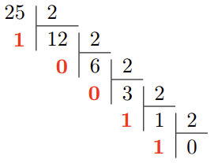
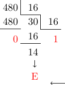

TRAVAILLER EN BASE 2, 10 ET 16⚓︎
Repères historiques⚓︎
L'invention du système binaire est souvent attribué à tort au savant allemand Wilhelm Gottfried Leibniz (1646-1716).
En effet, le mathématicien et astronome anglais Thomas Harriot (1560-1621) avait déjà travaillé sur les systèmes non décimaux. Voir une publication en ligne des manuscrits de Harriot
Leibniz s'inspira des figures de le l'empereur chinois Fuxi (-3000) que l'on peut considérer comme la première expression d'un codage binaire.
Comment représenter des informations sur une machine numérique ?⚓︎
Unité d'information⚓︎
Les machines numériques sont composées d'éléments manipulant l'information sous forme de deux états distincts. C'est la raison pour laquelle on les appelle machine binaire. Par convention, ces états sont notés \(0\) ou \(1\). En anglais, ces informations élémentaires sont appelées binary digit ou bit.
Un bit permet de représenter \(2^1=2\) informations.
On peut généraliser: \(n\) bits permettent de représenter \(2^n\) informations.
Les machines numériques manipulent habituellement des groupes de bits. Ainsi, un groupe de 8 bits forment un octet.
ATTENTION
en anglais un octet est traduit par BYTE.
Au delà de 8 bits on utilise le terme mot. On parle par exemple de mot de 16 bits, de mot de 32 bits (on trouve aussi le terme double mot) ou de mot de 64 bits (ou quadruple mot).
Les quantités d'informations stockées ou manipulées s'expriment avec les préfixes habituels reliés aux puissances de 10 (1 kilooctet (ko) \(= 1\times10^3\) octets, 1 mégaoctet (Mo) \(= 1\times10^6\) octets, 1 gigaoctet (Go) \(= 1\times10^9\) octets etc).
Remarque
Certains informaticiens/électroniciens utilisent encore des définitions de ces quantités exprimées en puissances de 2 (\(2^{10}\), \(2^{20}\), \(2^{30}\), etc). Pour éviter les confusions, l'International Electrotechnical Commission (IEC) a normalisé ces appellations en décembre 1998. Voir lien.
Représentation binaire des entiers naturels⚓︎
Représentation positionnelle: décomposition suivant une base⚓︎
On présente les nombres entiers de manière classique en représentation positionnelle. Par exemple en base 10, la suite 123 signifie \(1\times 10^2+2\times 10^1+3\times 10^0\). En base 2, la suite 10011 signifie \(1\times 2^4+0\times 2^3+0\times 2^2+1\times 2^1+1\times 2^0\).
Dans un motif binaire, le bit le plus à droite est le bit de poids faible ou LSB (Least Significant Bit). A l'opposé, le bit le plus à gauche est le bit de poids fort ou MSB (Most Significant Bit).
Astuce
Le bit de poids faible peut être utilisé pour trouver la parité du nombre: \(0\) indique un nombre pair et \(1\) un nombre impair.
Conversion binaire - décimal⚓︎
La conversion binaire - décimale d'un entier naturel découle simplement du mode de représentation positionnelle: on additionne les puissances de 2 présentes dans le motif binaire. Ainsi, pour l'exemple précédent on a:
\(10011_2=(1\times 2^4+0\times 2^3+0\times 2^2+1\times 2^1+1\times 2^0)_{10}=19_{10}\)
Remarque
La base a été indiquée ici en indice, on peut l'omettre lorsqu'il n'y a pas d'ambiguité.
Conversion décimal - binaire⚓︎
On décompose le nombre entier en une somme de puissance de 2 par divisions entières successives tant que le quotient n'est pas nul. Le résultat est alors constitué des restes de chaque division, en commençant par la dernière.

\(25=11001_2\)
Représentation hexadécimale⚓︎
La représentation binaire devient rapidement encombrante. On lui préfère souvent la représentation hexadécimale (base 16). L'utilisation de cette base nécessite 16 caractères. Le tableau ci-dessous présente ces caractères ainsi que leur équivalence en base 10 et 2.

Conversion décimal - hexadécimale⚓︎
De la même façon qu'en binaire, on décompose le nombre entier en une somme de puissance de 16, par divisions successives par 16 tant que le quotient n'est pas nul.

\(480=1\mathrm{E}0_{16}\)
Conversion hexadécimale - décimale⚓︎
On additionne les puissances de 16 présentes dans le motif hexadécimal.
\(1\mathrm{E}0_{16}=1\times 16^2+14\times 16^1+0\times 16^0=256+224+0=480\)
Remarque
Dans la somme, on remplace évidemment chaque chiffre hexadécimal par sa valeur (en décimal). Dans l'exemple précédent, \(\mathrm{E}\) est remplacé par 14.
Conversions binaire - hexadécimal et vice-versa⚓︎
Pour passer du binaire à l'hexadécimal il suffit de grouper les bits par 4 et de les remplacer par leur équivalent hexdécimal (voir tableau ci-dessus).
\(1101011111_2=0011\ 0101\ 1111=35\mathrm{F}_{16}\)
A l'inverse, pour passer de l'hexadécimal au binaire, on remplace chaque chiffre hexadécimal par sa valeur en binaire.
\(\mathrm{F}15_{16}=1111\ 0001\ 0101_2\)